Zero-Footprint Edge Neuroimaging on AMD
BrainChop × AMD
Jack Lo · Kristof Denolf · Gagandeep Singh · Mike Doan
Sergey Plis

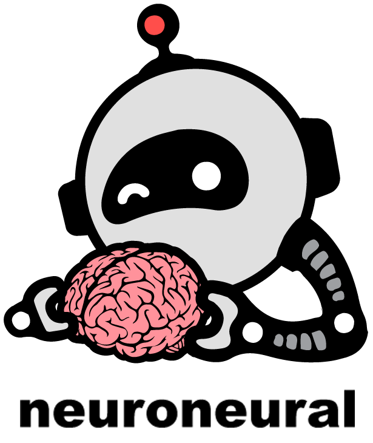
Motivation
Publications
Abundance
Models
Scarcity
Tools
Absence
Only 40% of radiology AI studies shared models;
deep learning models showed the lowest availability (11.5%)
Privacy Matters
- Strict HIPAA / GDPR constraints limit cloud use for clinical data
- Patients trust clinics, not third-party cloud servers
- Not all data can be easily transferred out of institutional silos
- Local deployment is the only way for widespread adoption, but it's often too complex.
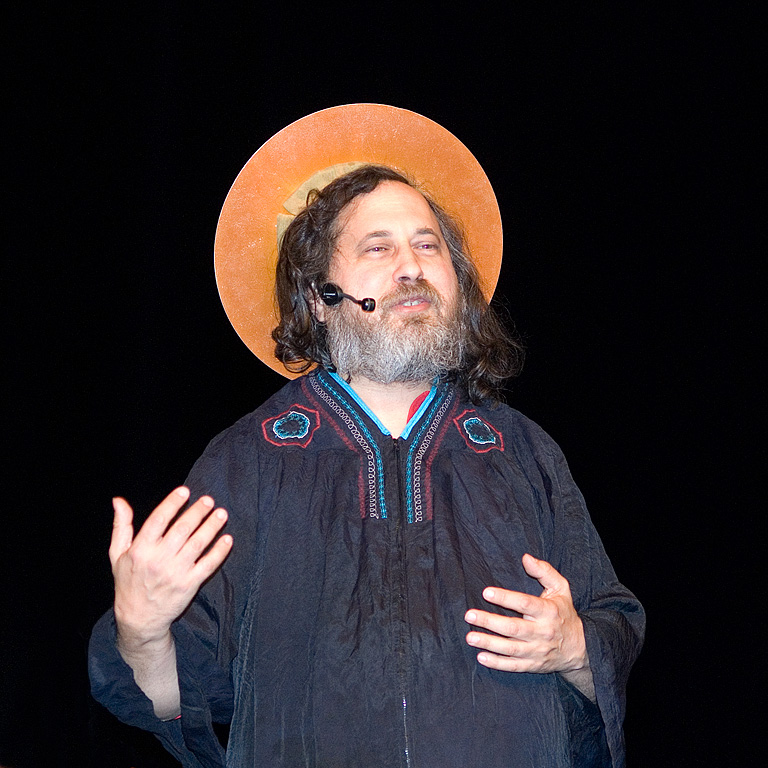
Richard Stallman, founder of the Free Software Foundation
The "Skill Issue" Paradox
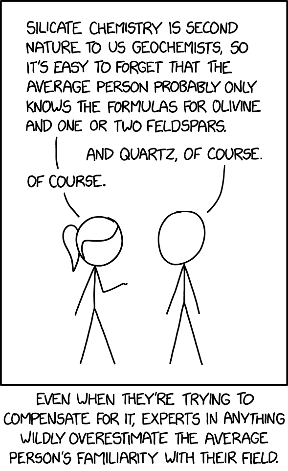
Brainchop.org

Interactive demo
Judging adoption by on
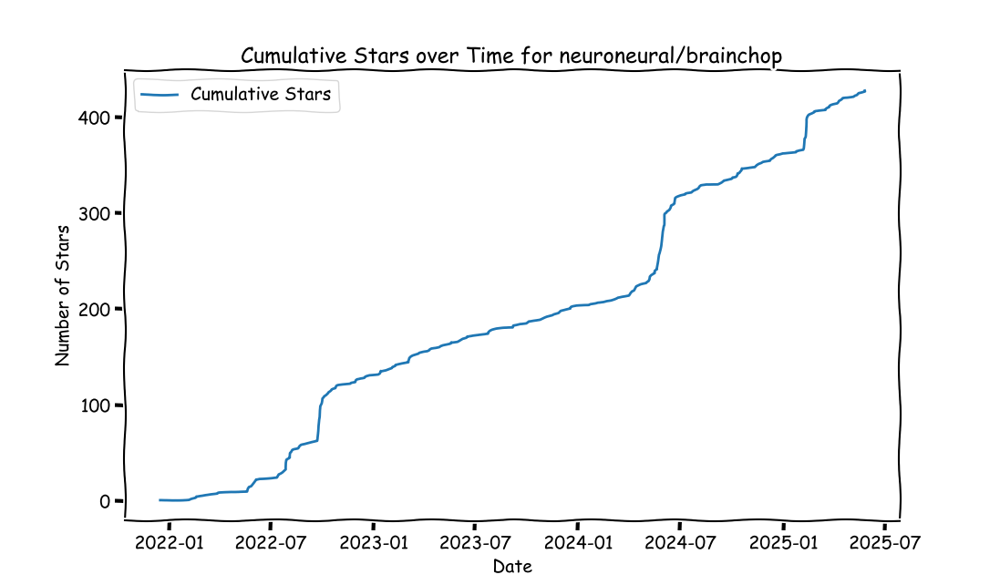
Brainchop
$ pip install brainchop
Brainchop for the most elegant UI
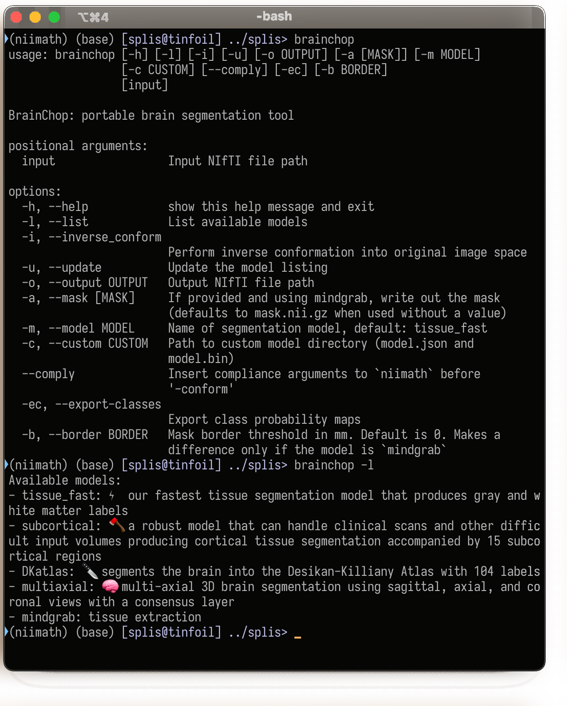
Core Architecture
MeshNet
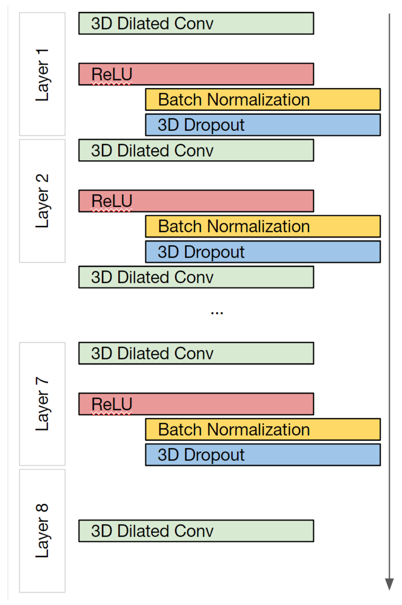
- Tiny parameter count (~72K vs millions in U-Net)
- Allows full-volume 3D inference (no subcubing)
- Perfect for browser deployment (WebAssembly / WebGL / WebGPU)
- Applications:
- MindGrab: Robust Skull Stripping
- Stroke Lesion Segmentation (Pareto front)
- Brain2Print generation
Armina Fani
Mindgrab
Robust Skull Stripping of Any Modality on Any Device

MINDGRAB (DICE)
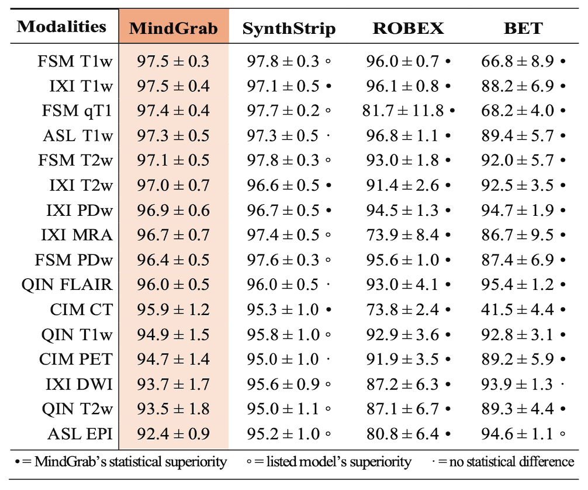
MINDGRAB (EFFICIENCY)
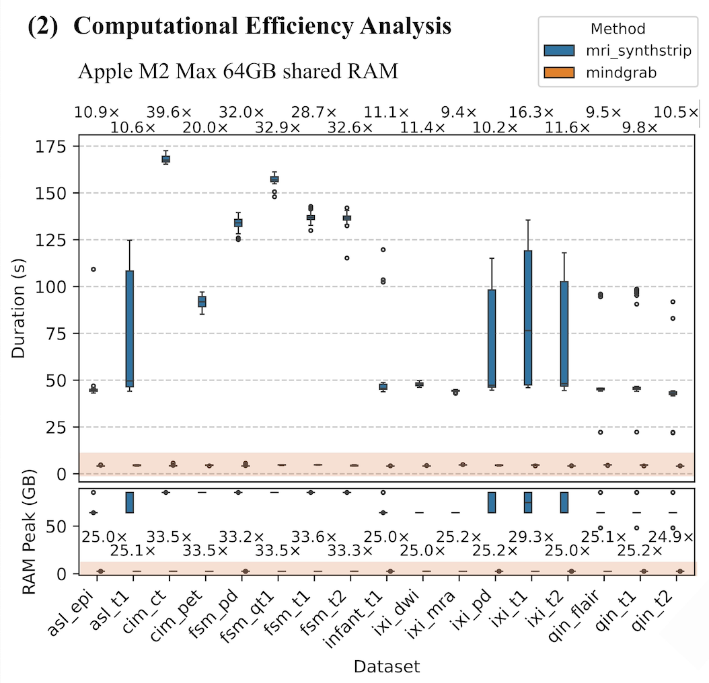
Alex Fedorov
Stroke Lesion Segmentation
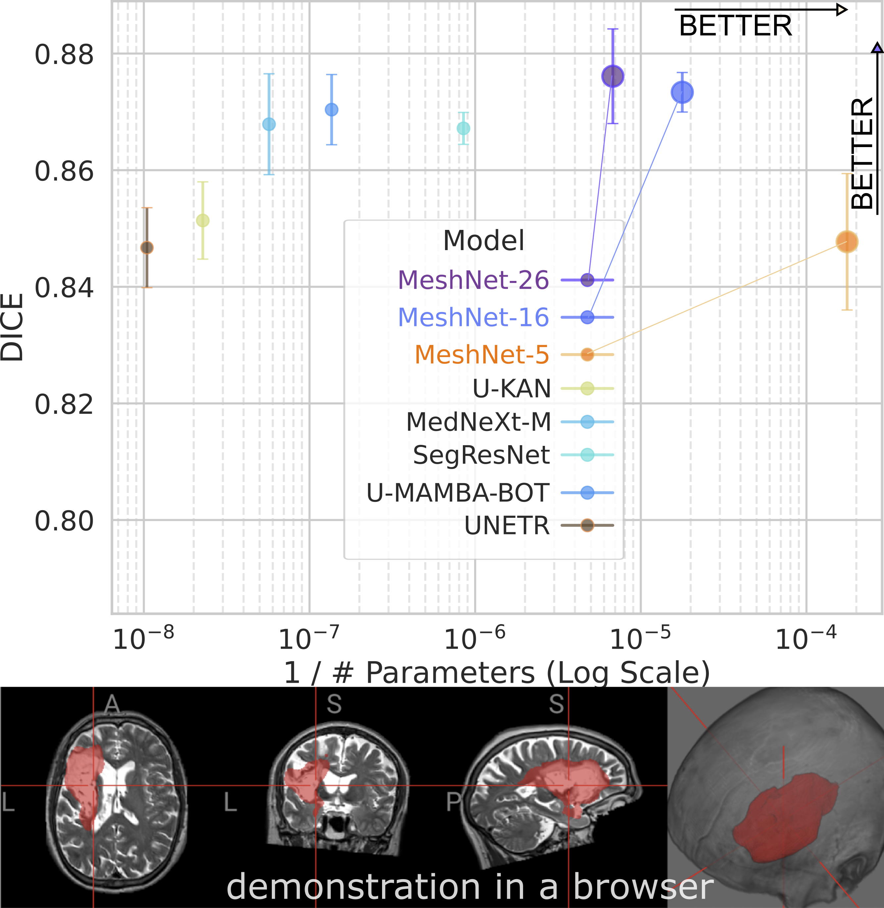
pip install brainchop
powered by tinygrad
AMD to the Rescue
Ryzen AI Max+ 395
The "Unified Memory" Necessity
- Processor: 16-Core / 32-Thread
- GPU: Radeon™ 8060S (14,800 GFLOP/s fp32, 256 GB/s BW)
- Memory: 128GB LPDDR5x-8000 Unified Memory
The Capacity Advantage: By allocating ~96GB+ of system RAM as VRAM, we can load and train massive 3D volumetric models (MeshNet) that exceed the 80GB VRAM limit of standard enterprise GPUs.
All in a 4.5L Framework Desktop — clinician-grade local AI, directly on hospital desks.
Roofline — OpenCL Backend
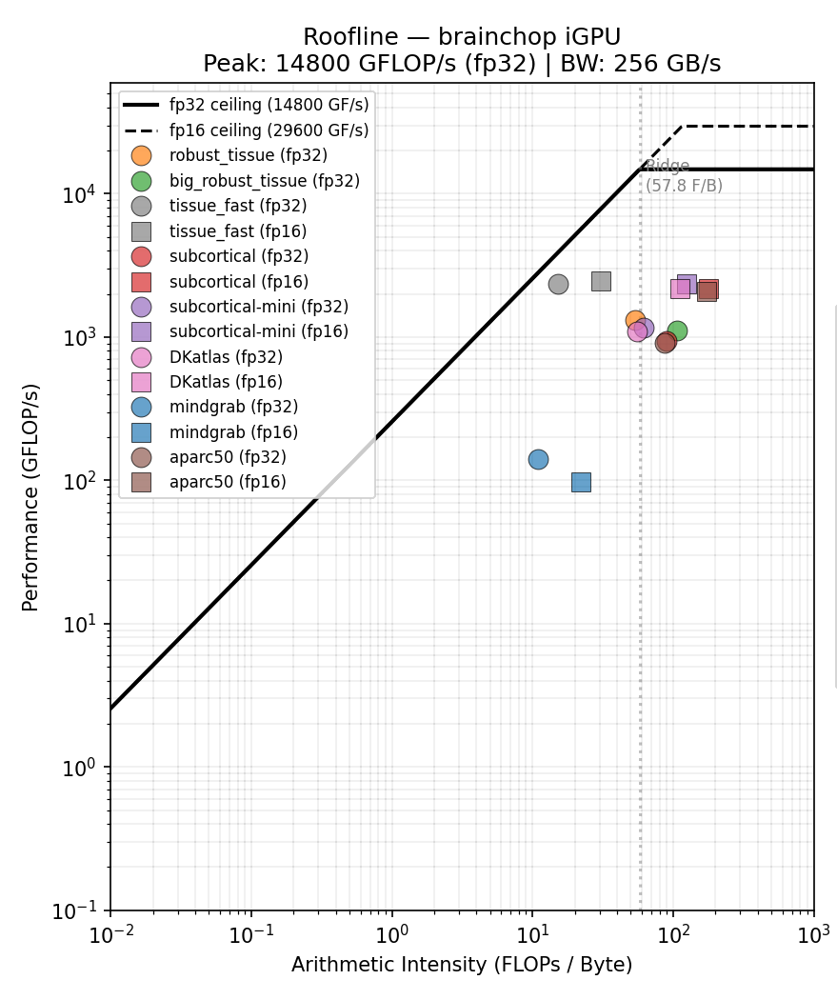
Baseline characterization via OpenCL tinygrad backend on Radeon 8060S
Roofline — ROCm Backend
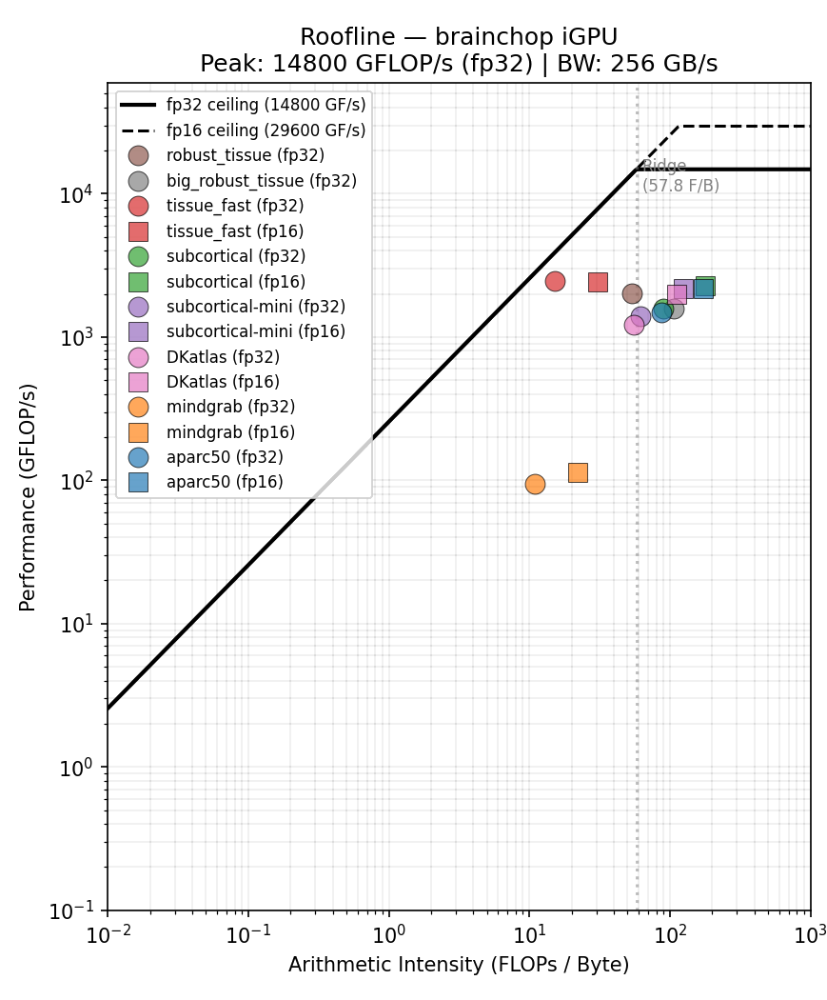
Early ROCm backend results
OpenCL vs ROCm Comparison
[Combined OpenCL vs ROCm Roofline Plot goes here]
ROCm improvements are visible, but headroom remains.
ROCm improvements are visible, but headroom remains.
The Path Forward
- Cloud Training on AMD Instinct MI300X: Upstream MeshNet into MONAI, trained on AMD Instinct accelerators via ROCm.
- Local Inference on Ryzen AI: Benchmark brainchop-cli speedups on Ryzen AI Max+ against generic CPUs.
- WebGPU Acceleration: Still working on taking maximum advantage of WebGPU on this platform. Profiling browser inference against AMD WebGPU drivers to define the roadmap.